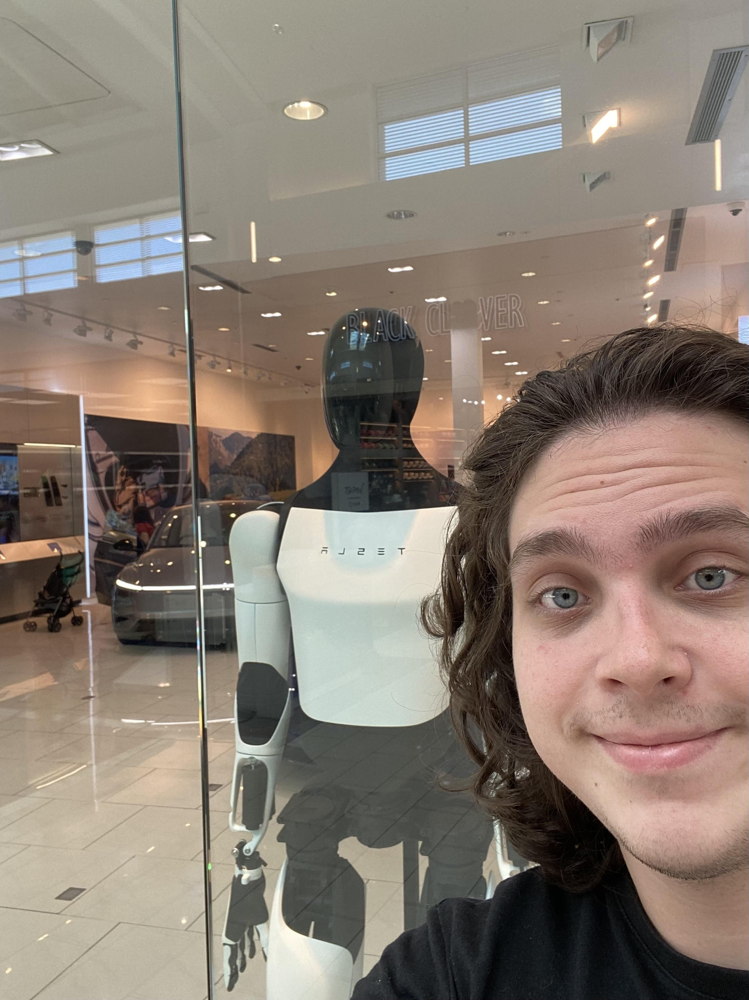

Analise e Desenvolvimento de sistemas — Universidade Vila Velha
Meu nome é Robert e eu nasci no dia 26 de junho de 2007, tenho 18 anos e estudei toda a minha vida no colegio são josé e quando sai do colegio entrei para Engenharia Quimica no IFES, porem no segundo periodo percebi que não era o caminho certo para mim, e que eu gostava mais da materia de programação do que todas as outras. E então decidi mudar para Analise e Desenvolvimento de sistemas, onde estou atualmente, e pretendo me formar em 2027. Sou uma pessoa muito interessada em tecnologia, desenvolvimento, criatividade e inovação.
Desejo trabalhar com desenvolvimento de software e criação de soluções tecnológicas inovadoras.
Sou criativo, trabalhador e tenho facilidade para aprender novas tecnologias, admiro como a tecnologia pode ser utilizada para resolver problemas e melhorar a vida das pessoas. E principalmente, como monetizar a tecnologia, utilizando ela para criar oportunidades de negócio.
Gosto de jogar videogames, em destaque Kerbal Space Program
Gosto de rock, pop e quase todos os generos, de tudo um pouco
Gosto de ler livros e assistir a filmes antigos
Música que estou ouvindo:
| Período | Instituição | Nível |
|---|---|---|
| 2011–2024 | Colégio São José | Fundamental I e II + Ensino Médio |
| [2025–atual] | Universidade Vila Velha | Graduação |
| Matéria | Resumo |
|---|---|
| Construção de Software para Web | Desenvolvimento de aplicações web utilizando HTML, CSS e JavaScript, abordando boas práticas de front-end. |
| Design e Desenvolvimento de Banco de Dados II | Modelagem avançada de banco de dados, consultas SQL complexas, otimização e administração de SGBDs. |
| Empreendedorismo e Negócios | Conceitos de empreendedorismo, criação de modelos de negócio, plano de negócios e gestão de startups. |
| Engenharia de Software II | Processos de desenvolvimento de software, arquitetura de software, qualidade, testes e gerenciamento de projetos. |
| Inovação e Design Thinking | Metodologias criativas para resolução de problemas, prototipação e desenvolvimento de soluções centradas no usuário. |
| Inteligência Artificial e Chatbot | Fundamentos de IA, aprendizado de máquina e desenvolvimento de chatbots e assistentes virtuais. |
| Programação Orientada a Objetos I | Paradigma de orientação a objetos, classes, herança, polimorfismo e encapsulamento aplicados ao desenvolvimento de software. |
| Engenharia Transformacional | Modelos de projetos e como implementá-los em contextos reais. |
Simulação Geopolitica do IFES (SIGI) — Evento Academico, (2022, 2023, 2024). Um evento de debates (comites) sobre situações geopoliticas onde alunos simulam delegados de paises com o fim de resolver a situação, organizado e planejado pelo instituto federal do espirito santo (mini ONU)
Simulação Vicentina das Nações Unidas (SIVNU) — Trabalho Academico, (2024, 2025, 2026). Um evento de debates (comites) sobre situações geopoliticas onde alunos simulam delegados de paises com o fim de resolver a situação, organizado e planejado pelo Colegio Vicentino São José (mini ONU)
Show de fisica — Trabalho Academico, (2024). Uma apresentação de experimentos de fisica organizado pelos alunos e professores do Colegio Vicentino São José
Show de fisica UFES — Trabalho Academico, (2024). Uma apresentação de experimentos de fisica organizado pela Universidade Federal do Espirito Santo.
Visita tecnica à CESAN — Evento Academico, (2025). Visita tecnica à estação de tratamento de esgoto da CESAN na Serra
Semana da Fisica — Evento Academico, (2025). Uma imersão de 3 dias de palestras sobre fisica e sua historia e seu papel na modernidade organizado pelo IFES cariacica